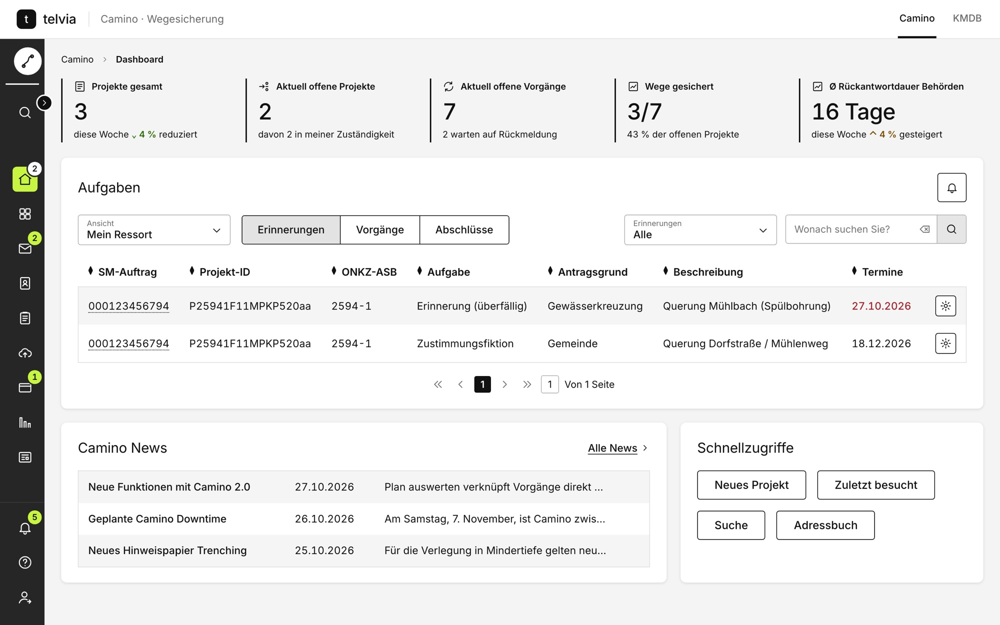
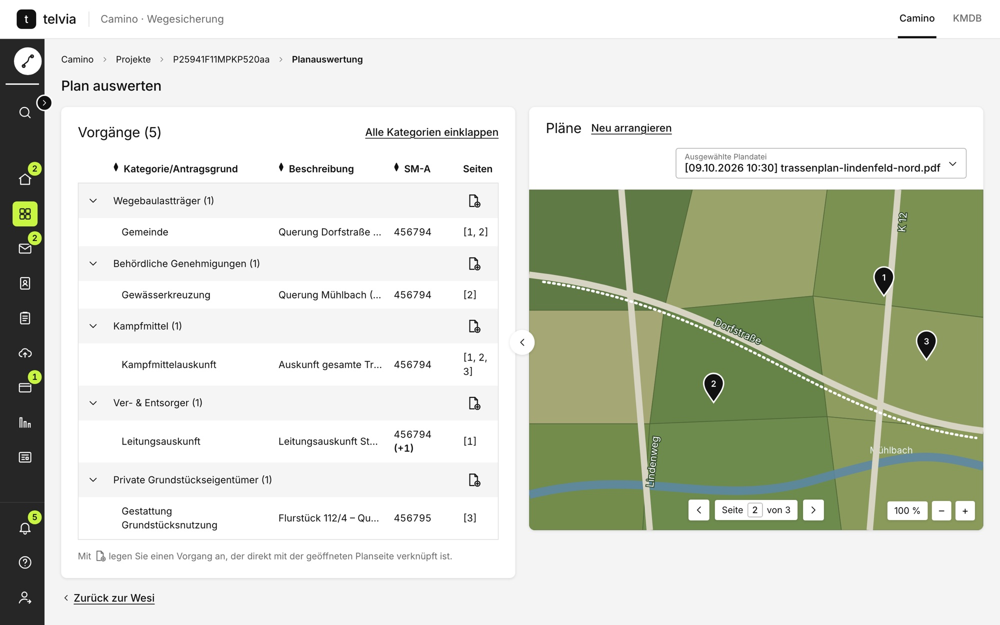
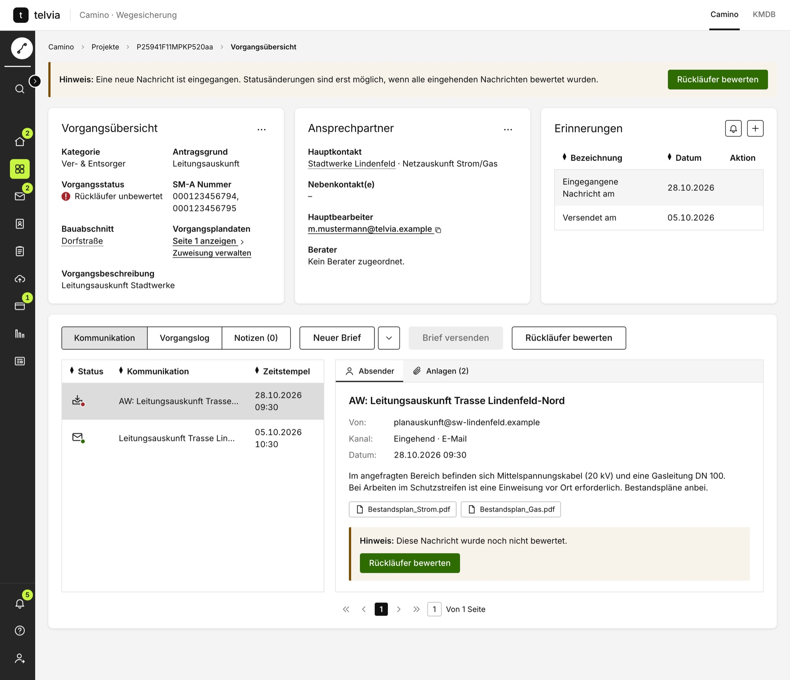
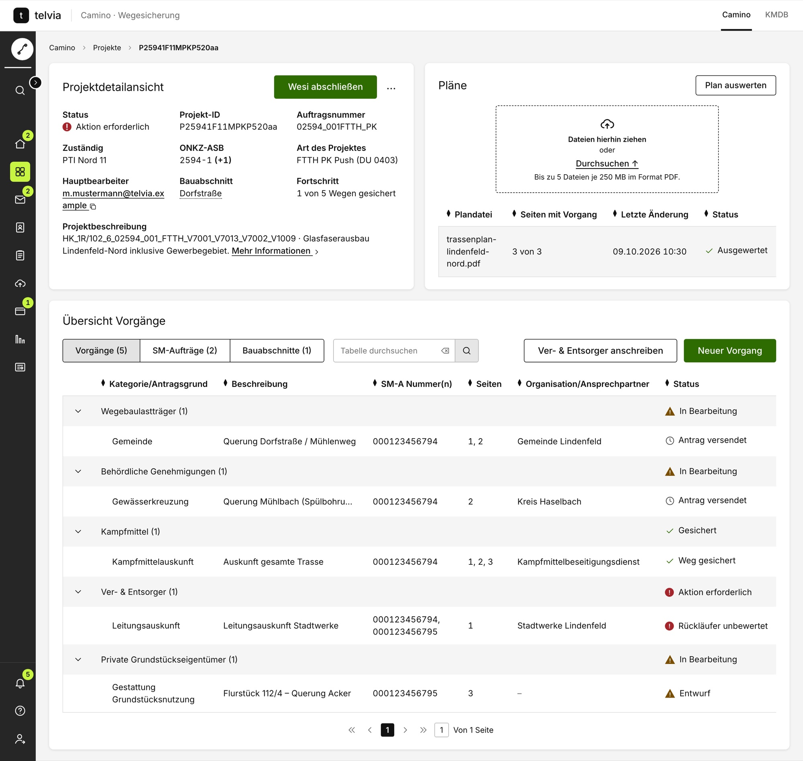

Permission for
every metre
Before fibre goes into the ground in Germany, every metre of the route needs a permission. Camino is the internal tool I designed for the planners who collect them: from towns, utilities, landowners, and the bomb disposal service.
Confidential project, shared on request. Screens are recreated under the brand "telvia" with fictional data.

- Product
- Internal workflow tool for securing the right of way
- Users
- Route planners and external contractors
- Scope
- End-to-end permit flow, from project set-up to archive
- Output
- Flows, screen designs and a clickable hi-fi prototype
One cable, dozens of permissions
Picture a village waiting for fast internet. The new fibre route runs a few kilometres: under a municipal street, along a district road, beneath a stream, across two farm fields and past an old gas line.
Every crossing has an owner. Every owner needs a letter, the right page of the route plan, and time to answer. One project quietly turns into dozens of separate conversations, and each planner runs several projects at once.
Planner, before"It all lives in spreadsheets, Outlook folders and paper letters. When I'm on holiday, the project stands still."
Construction waits
No digging starts until every metre is secured. This step is the bottleneck of the rollout.
Legal deadlines slip
A missed date means losing the right to treat silence as approval.
Knowledge in one inbox
Colleagues and contractors can't take over a case they can't see.
Germany adds its own layer
The work is not hard because any single step is hard. It is hard because hundreds of small, rule-bound steps run in parallel, each with its own clock.
Every office is different
Each municipality has its own forms and its own pace. Many still answer by post.
A deadline that can work for you
If a road authority does not decide within three months of a complete application, approval is deemed granted. Only if you can prove the date.
Four weeks to answer
Water, power and gas companies need time to check their networks against the route.
Even letters have rules
Over 65 sheets, the print service can't send them. They are printed by hand and the dispatch is confirmed before any deadline starts.
Landowners are people
Their data is protected. Personal notes must stay out of the official archive.
Proof for decades
Approvals and contracts go to a long-term archive, because the cable stays in the ground.
Bombs in the ground
Around eighty years after the Second World War, Germany still finds unexploded bombs, often enough that evacuations of whole neighbourhoods are a familiar news story.
So before anyone digs, the route goes to the explosive ordnance disposal service. They often check it against aerial photos taken during the war. The answer can be "clear", "suspected", or "must be probed on site".
Everywhere else, a mistake means a delay. Here it means danger.
Its own category
Ordnance clearance is never hidden inside "other permits". It has its own place in every project.
Never colour alone
Status always shows as a shape and words, so nobody misreads "suspected" as "clear".
Tied to the plan page
Every answer links to the exact page of the route plan it covers, so the team sees which metres are clear.
They don't need delight. They need certainty.
Experts, all day, many projects
They know the rules better than any tool. They are interrupted by calls all the time and need to find their place again in seconds.
Shared work, one accountable person
External contractors prepare requests. One Telvia owner stays accountable and is the only one who can close a project.
Design challengeHow might we turn hundreds of parallel, rule-bound conversations into one calm list of next steps, with the legal proof built in?
From project to secured route
I mapped the whole journey before drawing a screen. A project moves through eight steps; each request inside it follows its own life cycle.
- 01
Create project
Enter the project ID. Build orders load from the order system.
- 02
Upload the plan
The route plan becomes the map of the work.
- 03
Evaluate the plan
Create a request right on the page where the cable crosses something.
- 04
Pick contacts
The address book is filtered by area and type of owner.
- 05
Send
From a template, with the plan pages attached. Email or letter.
- 06
Rate the reply
Approved, with conditions, needs revision, or wrong recipient.
- 07
Secure and archive
Legal documents go to the archive. Personal notes don't.
- 08
Close the project
When every request is closed, construction can start.
One calm list of next steps



Replies must be rated
An incoming answer is rated before the status can move. The inbox becomes a list of decisions.
Bulk where work repeats
All utilities in an area can be contacted in one step, one request each.
Built for everyone on the team
An internal tool is used every day, for years, by everyone in the department. Nobody chooses it, so it has to work for all of them.
Shape and words, not colour
Warning is a triangle, error a circle, done a check, each with a label. Statuses stay readable with colour blindness.
Contrast that passes
The brand lime only appears on dark surfaces. Buttons and links use a deep green and black at WCAG AA or better.
Keyboard and calm
Every action is reachable by keyboard, dialogs close with Escape, and motion can be switched off.
Try Camino
The prototype runs right here, with fictional data. Use the "Prototyp" button in its corner to simulate replies and fast-forward time.
- 1Rate the new reply from the utility
- 2Create a request on plan page 2
- 3Fast-forward until silence counts as approval
What I took away
Learn the rules first
Most design decisions came straight from the law and the process. Mapping the full life cycle before any screen saved the most rework.
Trust comes from predictability
Experts trust a tool that always puts the next step, the deadline and the proof in the same place.
Next: more bulk
Many requests look alike. Rating similar replies and sending reminders in batches would save the most time next.
A fibre connection is the last step of a long paper trail. Camino's job is to make that trail shorter, provable and calm.